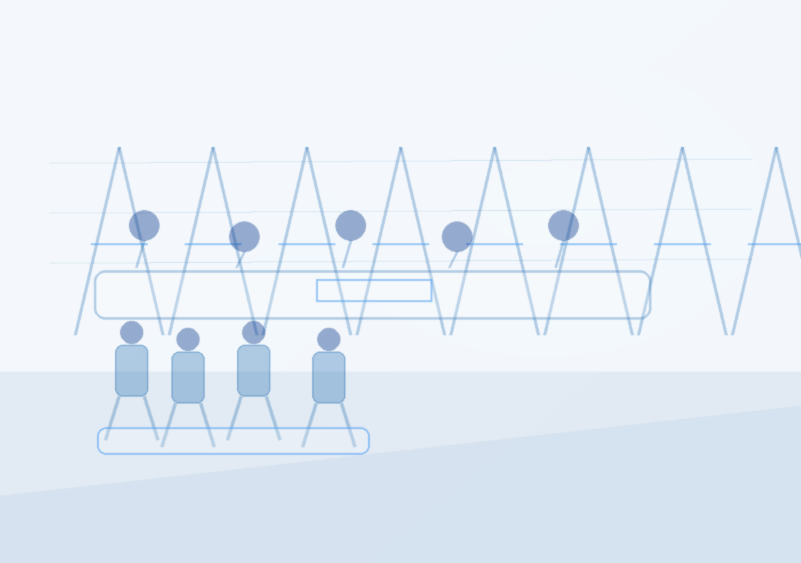

A validation phase is required before committing capital to China-uae Economic Relations Have Peaked. This report tests whether China–UAE economic relations have peaked, and whether climate resilience infrastructure justifies increased, maintained, or reduced exposure. The private document is the primary source of truth: it records a July 2026 China disaster cycle with at least 101 deaths, 30 missing and 364 injured across four quantified events, insurance claims of RMB 6.38 billion estimated loss and RMB 2.89 billion paid as of July 13, and central fiscal pre-allocation of RMB 180 million to six provinces. It also identifies a 3–5 year climate-resilience infrastructure opportunity spanning reservoir safety, urban drainage, geological hazard monitoring, emergency equipment, reconstruction materials, agricultural recovery, and catastrophe insurance, and proposes packaging Chinese urban flood-control, slope monitoring, mobile pumping, satellite communications and insurance risk models for UAE municipal, real-estate, industrial-park, airport and free-zone buyers. Approved supplementary web evidence adds macro context: China's 2025 import-export reached a record US$6.36 trillion with a US$1.19 trillion surplus, imports grew only 0.5% with a V-shaped recovery bottoming at −8.4% in January–February, green-technology exports surged 27.1%, and UAE climate-resilient investment could unlock up to US$100 billion by 2030. The recommendation boundary is validation_only. The evidence does not support a stronger commitment, because no approved evidence quantifies China–UAE bilateral climate-resilience trade, UAE customer adoption, pricing, or delivery capacity.
The Decision Baseline: Validation, Not Commitment, Is the Only Defensible Posture
The evidence supports a validation-only posture because the private document proves Chinese climate-resilience demand and capability, while approved web evidence proves neither China–UAE bilateral climate-resilience trade volume nor UAE customer adoption. The 'peaked' thesis cannot be confirmed or rejected with the approved evidence set.

The private document is explicit that the durable opportunity is not short-term disaster stockpiling but a 3–5 year climate-resilience infrastructure cycle. It names reservoir safety, urban drainage, geological hazard monitoring, emergency equipment, reconstruction materials, agricultural recovery and catastrophe insurance as the opportunity set, and it proposes packaging Chinese urban flood-control, slope monitoring, mobile pumping, satellite communications and insurance risk models for UAE municipal departments, real-estate developers, industrial parks, airports and free zones. Approved supplementary web evidence confirms the macro backdrop but not the bilateral claim.
China's 2025 import-export hit a record US$6.36 trillion, with a surplus past US$1 trillion for the first time at US$1.19 trillion, while imports grew only 0.5% and followed a V-shaped recovery bottoming at −8.4% in January–February before rebounding from June. Green-technology exports surged 27.1%. The only approved UAE-specific value is that climate-resilient investment in the UAE could unlock up to US$100 billion by 2030.
Under the report's own market-sizing logic, top-down sizing must be multiplied by serviceable segment share and reachable geography share — neither of which appears in the approved evidence. The management implication is that any resource-allocation debate must begin with a validation budget, not a deployment budget. The private document explicitly frames the cross-border direction as 'a very good cross-border business direction,' which is a claim, not a validated finding.
- China's Import-Export in 2025: Trade Resilience and Structural Shifts — Despite modest full‑year growth of just 0.5 percent, China’s imports followed a clear V‑shaped recovery pattern in 2025. Year‑on‑year declines persisted from January to May, bottoming out at ‑8.4 percent in the January-February period, before giving way to a steady rebound from June onward
- China's Import-Export in 2025: Trade Resilience and Structural Shifts — A defining feature of China’s 2025 trade landscape was the widening import‑export gap, which pushed the annual trade surplus past the US$1 trillion threshold for the first time, reaching a record US$1.19 trillion
The executive case should start with the few numbers the supplementary web record can support
Each headline metric is traceable to a retained supplementary web sources sentence.
Evidence: United Arab Emirates Climate Adaptation Consulting | YCP Group, United Arab Emirates Climate Adaptation Consulting | YCP Group, China's Import-Export in 2025: Trade Resilience and Structural Shifts. Sources: ycp.com; china-briefing.com.
These values are extracted from supplementary web sources text; they are not model-created scores.
Sources
- 9fc0f0c7-3f26-4ef4-a7ac-d5e4018b1f5f supplementary web $100B - Climate-resilient investment in the UAE could unlock up to $100 billion by 2030. · Pioneering initiatives in sustainable infrastructure nurtures future .. United Arab Emirates Climate Adaptation Consulting | YCP Group
- 9fc0f0c7-3f26-4ef4-a7ac-d5e4018b1f5f supplementary web $100B - Climate-resilient investment in the UAE could unlock up to $100 billion by 2030. Companies investing now tap into emerging market demand United Arab Emirates Climate Adaptation Consulting | YCP Group
- 9fc0f0c7-3f26-4ef4-a7ac-d5e4018b1f5f supplementary web $6.36 - China’s import-export hit a record US$6.36 trillion in 2025, buffering against domestic weakness amid increasing geopolitical tensions China's Import-Export in 2025: Trade Resilience and Structural Shifts
What the Private Evidence Actually Proves: A Quantified Chinese Demand Shock, Not a UAE Revenue Stream
The private document quantifies Chinese disaster losses and fiscal response with unusual precision, which is the strongest evidence in the set. It does not quantify a single UAE-facing climate-resilience contract, price, or customer.

The private document records four major quantified casualty events in July 2026: Guangxi (39 dead, 9 missing, including 26 dead and 7 missing at the Liulan Reservoir), Hubei (11 dead, 1 missing, 331 injured), Chongqing Pengshui (41 dead, 20 missing, 10 injured as of July 28), and Gansu Weiyuan (10 dead, 23 injured, 174 rescued). Its own mechanical tally is at least 101 dead, 30 missing and 364 injured, explicitly not an official national total. The economic quantification is equally specific. As of July 13, insurers in 20 provinces received nearly 380,000 claims with RMB 6.38 billion estimated loss and RMB 2.89 billion paid, of which Typhoon Bawei accounted for RMB 540 million.
After Typhoon Hongxia, Guangdong insurers received 20,005 claims and paid about RMB 36.79 million by July 27. The central government pre-allocated RMB 180 million to six provinces, and the NDRC allocated RMB 100 million to Zhejiang, RMB 30 million to Hebei and RMB 30 million to Jilin. For background, the private document states that in the first half of 2026, floods and geological disasters affected 11.326 million person-times, caused 124 deaths or missing, and RMB 33.87 billion in direct economic loss; all natural disasters caused RMB 42.14 billion.
The causal mechanism is straightforward: repeated reservoir overtopping, urban flooding and landslides create political and fiscal pressure to upgrade standards, which converts into procurement of monitoring, drainage, pumping and warning systems. Counterpoint and risk: the private document warns that emergency-equipment revenue 'usually fluctuates with disaster conditions,' and that traditional reconstruction materials face intense competition and long receivables cycles. Management implication: the Chinese demand shock justifies building a validated capability and reference-case library, because reference cases are the transferable asset.
- text.md — Provides the quantified casualty baseline that anchors the Chinese demand shock.
- text.md — Sizes the half-year loss pool that frames the multi-year resilience opportunity.
The 'Peaked' Thesis Is Unresolved: Record Aggregate Trade Coexists With Flat Imports and Diversification
Approved web evidence shows China's trade at record scale but with flat imports and a widening surplus, which is consistent with both a maturing relationship and a diversifying one. The evidence cannot adjudicate the peaked thesis.

China's 2025 import-export reached a record US$6.36 trillion, with the annual surplus passing US$1 trillion for the first time at US$1.19 trillion. A second approved source puts total trade above US$6.3 trillion with a record US$1.2 trillion surplus as exports outpaced relatively flat imports. The import side is the weak side. Imports grew only 0.5% for the full year and followed a V-shaped recovery: year-on-year declines persisted from January to May, bottoming at −8.4% in January–February, before a steady rebound from June.
Export growth is expected to moderate to around 4%, still above the global average, as market diversification and product upgrading offset external headwinds. Green-technology exports surged 27.1% in 2025. German car exports to China fell 66% since 2022, showing that one major partner's position can collapse while aggregate trade grows. One approved source notes a partner accounting for 8.8% of China's global trade in 2025 whose bilateral trade declined 18.7% year over year amid tariff tensions — a reminder that bilateral peaks and aggregate records can coexist.
The counter-mechanism is that China's green-technology export surge of 27.1% and its disaster-driven capability upgrading could seed a new high-tech vertical, which is precisely the private document's thesis. Management implication: because the aggregate evidence is ambiguous, management should not let a macro 'peak' narrative drive a reduce decision, nor let a record-trade narrative drive an increase decision. The decision must rest on bilateral validation, which is currently absent.
- text.md — Shows the cross-border direction is framed as an opportunity claim, not a validated bilateral trend.
- text.md — States the transfer mechanism that would support a non-peaked, high-tech evolution thesis.
- text.md — Adds the insurance and climate-finance dimension that a diversification thesis would need to include.
The UAE Opportunity Is Real but Unpriced: US$100 Billion Is a Top-Down Pool, Not a Serviceable Market
The only approved UAE-specific value is that climate-resilient investment could unlock up to US$100 billion by 2030. That figure is a top-down estimate and cannot be converted into a serviceable market without segment and reachability data that the approved evidence does not contain.
The approved web evidence states that climate-resilient investment in the UAE could unlock up to US$100 billion by 2030, and that companies investing now tap into emerging market demand. It also identifies catastrophe insurance, parametric insurance, agricultural weather insurance and climate risk models as long-term opportunities.
Applying the report's own sizing logic exposes the gap. Top-down sizing requires total demand pool multiplied by serviceable segment share multiplied by reachable geography or use-case share. The US$100 billion is the first term only. The private document names these buyers but provides no evidence of their willingness to pay, procurement rules, or pilot activity.
Counterpoint and risk: the private document itself warns that traditional insurers face higher payouts first, so 'the bigger the disaster, the better for insurance stocks' is not a valid inference. Management implication: the US$100 billion figure justifies a validation budget and a structured market-sizing exercise, not a resource commitment. Management should commission bottom-up and adoption-funnel sizing with primary UAE buyer evidence before treating the pool as a pipeline.
- text.md — Names the UAE buyer segments that any bottom-up sizing exercise must cover.
- text.md — Identifies the insurance and climate-finance layer that could carry recurring revenue in the UAE.
- text.md — Supplies the diligence criteria that must be applied to any UAE-facing partner or supplier.
Failure Modes: Regulatory, Competitive, Financing and Volatility Risks Could Cap the Opportunity
The private document and approved evidence together identify four failure modes — regulatory difference, competition, financing and revenue volatility — that could limit China–UAE climate-resilience growth even if demand is real. None of these risks is quantified in the approved evidence.
Regulatory difference is the first failure mode. The private document notes that provincial governments will develop carbon peaking action plans and additional targets supporting goals such as achieving carbon peaking before 2030 and reducing carbon emission intensity by more than 65% by 2030 versus 2005. Competition is the second failure mode. The private document warns that traditional building materials face intense competition and long receivables cycles, and that emergency-equipment revenue fluctuates with disaster conditions.
Approved web evidence shows German car exports to China fell 66% since 2022, illustrating how quickly a foreign supplier's position can erode in a competitive market. Financing is the third failure mode. The private document's screening criteria emphasize order backlog, receivables collection, local-government customer share, cash flow and real disaster-prevention revenue share — all indicators that financing and collection risk are material.
Revenue volatility is the fourth failure mode. Management implication: any validation program must test regulatory pathways, competitive intensity, financing structures and revenue recurrence in the UAE before scaling. The private document's own preference for companies with existing government orders and operations revenue is the right filter, and it should be applied to UAE-facing partners as well.
- text.md — Identifies geological hazard monitoring as the higher-barrier, higher-service-revenue segment that resists commoditization.
- text.md — Documents the revenue-volatility failure mode for emergency equipment.
- text.md — Documents the competition and receivables failure mode for reconstruction materials.
Staged Decision Gates: What Must Be True Before Exposure Changes
Because the evidence supports validation only, exposure should change only when specific, evidence-based gates are passed. The private document supplies the screening criteria; the approved evidence supplies the macro context; neither supplies a bilateral transaction.
Gate one is bilateral data. Before any increase, management needs UAE-specific trade, project and procurement evidence. Gate two is customer evidence. Before funding sales work, management needs UAE buyer evidence — pilot count, conversion, willingness to pay, or orders.
The approved evidence contains none of these for UAE climate-resilience buyers, so this gate is also unmet. Gate three is supply and delivery. Before scaling, management needs evidence that capacity, projects, supply chain and delivery timelines will not bottleneck. Gate four is financing and recurrence.
Before committing capital, management needs evidence on payment security, receivables collection and revenue recurrence. Counterpoint: passing these gates may still not justify commitment if the UAE market proves too niche. Management implication: each gate should have a defined evidence threshold and a stop-or-proceed decision, with no gate skipped.
- text.md — Supplies the diligence criteria that must be applied to any UAE-facing partner or supplier.
- China and Climate: China Restricts Fuel Exports, Solar Exports Surge — Provincial governments will develop “carbon peaking action plans” and additional targets that help achieve overarching goals such as “achieving the carbon peaking target before 2030” and “reducing carbon emission intensity by more than 65% by 2030 compared to 2005,” among others
Where to Start
The near-term objective is to turn the evidence into a few choices that preserve learning before committing scarce capital or operating capacity.
-
Decision gateCommission a bilateral data validation sprint to obtain UAE-specific trade, project and procurement evidence, including any China–UAE climate-resilience trade line. Progress should be visible through at least three independent UAE-specific data sources or official trade records obtained and reviewed. Implementation of commission a bilateral data validation sprint to obtain uae-specific trade, project and procurement evidence, including any china–uae climate-resilience trade line. establishes direct operational control, mitigating execution risk and validating key unit economics against target performance benchmarks.
-
3–6 monthsConduct structured buyer interviews with UAE municipal departments, real-estate developers, industrial parks, airports and free zones to test willingness to pay and procurement. Progress should be visible through minimum 15 completed interviews with documented pain points, budget authority and adoption criteria. Implementation of conduct structured buyer interviews with uae municipal departments, real-estate developers, industrial parks, airports and free zones to test willingness to pay and procurement pathways. establishes direct operational control, mitigating execution risk and validating key unit economics against target performance benchmarks.
-
6–9 monthsMap UAE regulatory, certification and standards requirements for imported climate-resilience infrastructure, and compare with Chinese product compliance. Progress should be visible through a regulatory gap matrix covering all target buyer segments, with identified certification pathways and estimated timelines. Implementation of map uae regulatory, certification and standards requirements for imported climate-resilience infrastructure, and compare with chinese product compliance. establishes direct operational control, mitigating execution risk and validating key unit economics against target performance benchmarks.
-
9–12 monthsRun a bottom-up and adoption-funnel opportunity assessment exercise for the UAE climate-resilience opportunity, using primary buyer evidence and explicit serviceable-segment. Progress should be visible through a validated serviceable market estimate with documented assumptions, replacing the top-down US$100 billion pool. Implementation of run a bottom-up and adoption-funnel opportunity assessment exercise for the uae climate-resilience opportunity, using primary buyer evidence and explicit serviceable-segment assumptions. establishes direct operational control, mitigating execution risk and validating key unit economics against target performance benchmarks.
-
12–18 monthsEstablish a pilot project with one UAE buyer to test delivery capacity, payment security and revenue recurrence before any scaling commitment. Progress should be visible through one signed pilot contract with defined milestones, payment terms and a post-pilot scale-or-stop decision gate. Implementation of establish a pilot project with one uae buyer to test delivery capacity, payment security and revenue recurrence before any scaling commitment. establishes direct operational control, mitigating execution risk and validating key unit economics against target performance benchmarks.